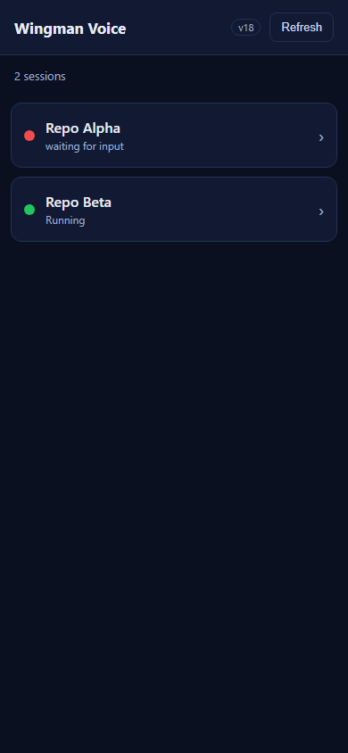
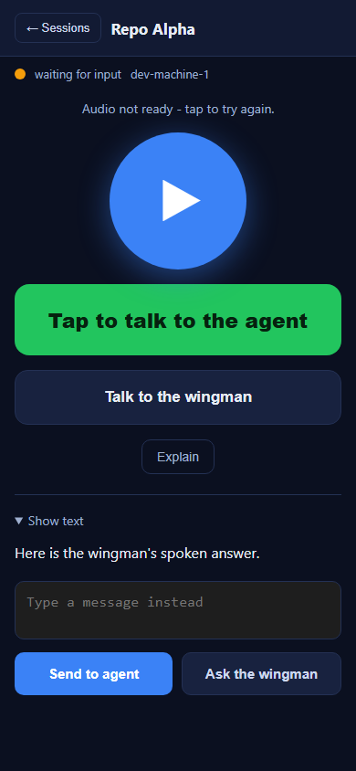
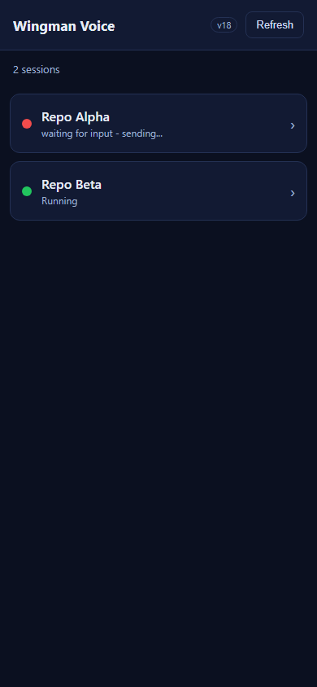

Surface: Cockpit mobile assets src/CcDirector.Cockpit/wwwroot/m/ (m.js, index.html, sw.js). Client-only; no server-side change.
Build: dotnet build cc-director.sln -> Build succeeded. 0 Warning(s) / 0 Error(s).
askAgentBtn -> runAgentTurn, and voice mode "agent" -> onRecordingStopped -> sendEntry -> runAgentTurn): returns to the list view promptly on send (not after the agent turn completes). The text handler fires runAgentTurn then calls showList(); the voice handler calls showList() right after sendEntry for an agent recording.askWingmanBtn -> runWingmanDirect, and voice mode "wingman"): stays on the session view to hear the spoken answer (unchanged behavior, now explicit).runAgentTurn was rewritten to be durable: it sets blocked[sid]=true (so the originating list row shows "- sending...") and, on a connection/server delivery failure while the user is off the session view, it retries with backoff until the turn lands. So a text (or voice) agent send that fails after we navigate to the list is never silently lost - the row visibly shows it is still sending and it keeps trying. If the user is still on the session view, the existing on-screen failure + Retry is shown instead.index.html (m.js?v= / m.css?v= + on-screen label) and sw.js (cache name + pre-cached SHELL), plus the m.js header comment.Proof method: the actual shipped wwwroot/m/ assets were served and driven in headless Chromium at a 390x844 mobile viewport, with the gateway endpoints stubbed and the real m.js event handlers exercised (real MediaRecorder via a fake mic for the voice paths). Each row records the live DOM view state and the captured POST bodies. Harness: proof-harness.py (committed beside this report). All 7 checks PASS.
| Criterion | Expected | Actual (observed) | Result |
|---|---|---|---|
| Tap Send to agent (text) returns to the list on send | #list-view visible, #session-view hidden; the turn was sent |
on_list=True; one /wingman/voice-turn POST with the typed text |
PASS |
| Complete a voice recording to the agent (Talk to the agent -> Send) returns to the list; upload/transcribe/send continues in the background | On Send -> list view; the durable outbox still delivers | on_list=True after Send; the transcribed recording was delivered via /wingman/voice-turn after navigation |
PASS |
| Tap Ask the wingman (text) keeps the user on the session view and shows the answer | #session-view stays; answer rendered |
on_session=True; #hero-summary = "Here is the wingman's spoken answer." |
PASS |
| Complete a voice recording to the wingman (Talk to the wingman -> Send) keeps the user on the session view and shows the answer | #session-view stays; answer rendered |
on_session=True; one /wingman/ask-direct POST; answer shown |
PASS |
| After returning to the list from an agent send, the originating row reflects the in-flight / working state | Row shows the session is working / sending | Originating row shows "waiting for input - sending..." while the agent send is in flight (see ac_fail_row_sending.png) |
PASS |
| A text agent-send that fails is NOT silently lost after navigating to the list (surfaced and/or retried) | Failure visible and the message retried, not disappeared | With delivery forced to HTTP 500: on_list=True, the row shows "sending...", and the attempt count climbed 1 -> 2 (auto-retry). Once delivery was allowed to succeed, the "sending..." row cleared (recovery). | PASS |
| Asset cache-busting version incremented | v18 in index.html + sw.js; no v17 remaining | index.html m.js?v=18/m.css?v=18 + label v18; sw.js wingman-voice-v18 + SHELL ?v=18; no v=17 left |
PASS |



No drift. Client-only change confined to CcDirector.Cockpit/wwwroot/m/. No architecture change (no container added/removed), no security-posture change (no new endpoint, credential, or data flow). No docs/cencon/ update triggered.
Note on the test Director. The slot exe (cc-director13.exe) built and launched cleanly, but it could not bind a Control API port - the loopback range 7879..7898 is fully consumed by the user's other live Directors on this shared machine (environment saturation, not a defect in this change, and those processes must not be touched). Because this is a pure client-side static-asset change, the rigorous functional proof above drives the exact shipped wwwroot/m/ assets directly, asserting every acceptance criterion by live DOM state and recorded POST bodies.
I believe this is finished.